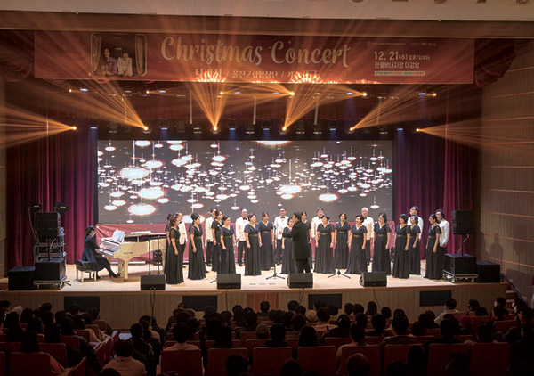

한수원과 한국원자력산업협회, 산업통상자원부가 12월 2일 서울 노보텔 앰배서더 강남 호텔에서 산·학·연 전문가 등 200여 명이 참석한 가운데 ‘2022 원전해체 비즈니스 포럼’을 개최했다. ‘해외 해체시장 경쟁력 확보를 위한 국내 원전해체 준비현황과 향후 과제’를 주제로 열린 이날 포럼은 총 3부로 구성됐다. 1부에서는 한수원, 한국전력기술, 두산에너빌리티에서 국내 해체사업 추진 및 해외사업 진출전략에 대해 발표했다. 2부와 3부는 국내, 프랑스 및 캐나다의 전문가들이 원전해체 기술개발과 제도, 성공적인 해외사업 참여 및 전망에 대한 현황과 사례를 공유했다. 주제 발표에 나선 프랑스 국영 원전기업 Orano의 장 미셀 샤보프(Jean-Michel Chabeuf) 수석기술고문은 “국가별 특성에 맞는 해체산업 생태계 조성, 전문기술 및 인력 확보, 원전해체 종합계획 수립이 선행되어야 한다”고 강조했다. 황주호 사장은 “한수원은 전 세계 최초로 중수로 원전의 즉시해체를 준비하고 있다”며, “최근 Candu Energy와 MOU 체결을 기점으로 기술 및 인력교류 등 국제공조를 통해 안전하고 경제적으로 월성 1호기를 해체해 중수로 해체시장을 선점하도록 노력하겠다”고 말했다.
한수원이 연말연시를 맞아 12월 21일 ‘전통시장 장보기 행사 및 청렴문화 확산 캠페인’을 펼쳤다. 황주호 사장과 임직원들은 경주 대표 전통시장인 성동시장과 중앙시장을 방문해 600만 원 상당의 물품을 구매하고, 지역사회 청렴문화 확산을 위한 캠페인도 펼쳤다. 이날 구매한 물품은 경주시 지역아동센터 12곳에 전달해 센터 어린이들도 따뜻한 겨울을 보낼 수 있도록 지원했다. 한수원 직원들은 2016년 본사가 경주로 이전한 이후부터 전통시장 활성화와 지역사회 취약계층 복리증진을 위해 매월 전통시장 장보기를 시행하고 있다. 특히, 지난달에는 전통시장을 찾는 시민의 안전을 지키고 영세 상인들의 방역물품 구매 부담을 덜어주기 위해 전국상인연합회를 통해 전국 전통시장에 방역마스크 10만 장을 지원하기도 했다. 한수원은 앞으로도 영세상인들이 안심하고 생업에 종사할 수 있도록 지역 전통시장을 지속적으로 지원해나갈 계획이다.
한수원과 한국전력은 12월 23일 산업은행 본점에서 산업은행, 수출입은행, 무역보험공사 등 국내 정책·민간금융기관과 해외원전 수출사업 공동 금융지원 협력을 위한 「원전금융 Team Korea 업무협약(MOU)」을 체결하였다. 이번 협약을 통해 한수원과 한전은 정책·민간금융기관에 해외 원전수출 사업 발굴 및 관련 금융조달에 필요한 사업 정보를 제공하고 정책·민간금융기관은 원전수출 사업에 대한 금융조달 참여 및 지원을 통해 향후 해외원전수출 사업 추진과 금융지원을 위한 협력 기반을 조성해 나가기로 했다. 이번 업무협약은 지난 8월 출범한 원전수출전략 추진위원회에서 마련한 수출전략의 후속조치로서 원전수출 금융경쟁력을 높이기 위한 정책·민간금융간 협력체계 구축 계기가 될 것으로 기대되고 있다. 이번 「원전금융 Team Korea 업무협약」을 계기로 정책·민간금융기관이 원전금융에 적극 참여하게 될 수 있는 교두보가 될 것이다.
한수원은 12월 20일 경주 본사에서 ‘2022년도 우수협력기업 포상식’을 개최했다. 행사는 올 한해 한수원 동반성장 활동과 발전소의 안정적 운영에 적극 동참한 협력기업을 격려하고, 청렴한 기업 활동을 당부하기 위해 마련됐다. 또, 앞으로 한수원의 원전 생태계 활성화 방안 등에 대해 공유하는 간담회도 함께 진행됐다. 한수원은 ‘원전 생태계 활성화’를 2023~2027년 중장기 경영목표로 설정하고 신한울 1호기의 상업운전을 포함해 원전수출 확대 등을 통해 협력기업의 일자리 창출을 위해 노력하고 있다.
한수원은 11월 25일 한국전력 국제원자력대학원대학교(KINGS)에서 ‘2022년 하반기 IAEA 인증 국제 공동 원전해체 전문교육 과정’ 수료식을 열었다. 원전해체 전문가 양성을 위한 이번 교육은 IAEA가 인증한 전문교육 과정으로, 지난 11월 21일부터 25일까지 한수원 및 원전해체 산업체 관계자 20여 명을 대상으로 진행됐다. 특히 강의와 평가를 위해 방한한 IAEA의 실뱅 얀스키(Sylvain Janski) 박사를 비롯해 엄선된 국내외 7개 기관 전문가들은 원전해체 특성평가를 주제로 교육을 진행해 교육생들의 뜨거운 호응을 받았다. 남요식 성장사업본부장은 “국내 원전해체뿐만 아니라 세계 원전해체를 선도할 수 있는 인력이 되도록 끊임없는 노력을 당부드린다”면서, “향후 세계 원전해체 시장에 진출할 때 교육생들의 역량과 전문기술이 빛을 발할 수 있도록 한수원이 적극 지원할 것”이라고 말했다.
한수원 황주호 사장이 지난 8월 취임한 이후 직원들과의 소통을 위한 ‘밥心 토크(밥을 함께 나누며 나누는 진심이야기, 이하 밥심 토크) 프로그램을 도입하고 꾸준히 진행하고 있다. 한국인에게 ‘밥’은 사람과의 만남, 친밀함의 나눔, 관심과 사랑의 표현으로, 같이 밥을 먹는 사람을 식구(食口)라 할 만큼, 밥 한 끼 나누는 일은 그저 식사하는 것 이상으로 무척 살가운 관심의 표현이다. 그래서 밥심 토크는 직원들과 진심 어린 이야기를 나누고자 하는 황 사장의 소통 의지를 잘 보여주고 있다. 황주호 한수원 사장은 “밥을 함께 먹으며 오가는 다양하고 진심 어린 이야기는 함께 밥 먹는 이들을 연결해 주는 고리를 만들어준다고 생각한다. 다양한 직원들과 식사를 함께하며 세대 간 거리도 좁히고 서로가 경계를 풀며, 한 식구라는 동질감을 느끼게 해줄 것이라 기대한다”며, “내년까지 밥심 토크 100회를 목표로 지속적으로 진행할 계획”이라고 밝혔다.

한울본부는 12월 21일 한울에너지팜 대강당에서 지역주민 400여 명이 참석한 가운데 ‘문화가 있는 날 송년음악회’를 성황리에 개최했다. 정규 좌석 300석이 삽시간에 가득 차고 예비 의자와 방석에 입석까지 총동원했음에도 공간이 모자라 아쉽게 발걸음을 돌려야 했던 관객도 많았다. 첫 무대는 울진군립합창단이 맡았다. 지역주민으로 구성된 합창단임에도 불구하고 프로 합창단 못지않은 아름다운 화음을 선보였다. 이어 울진 출신 트로트 가수 풍금이 무대에 올랐다. 풍금은 탁월한 가창력으로 트로트를 즐겨 듣지 않는 젊은 세대들에게도 호응을 이끌어냈다. 공연의 대미는 여성 듀오 다비치가 장식했다. 크리스마스 분위기에 맞춰 준비한 ‘미리 메리 크리스마스’와 다비치 최고의 히트곡 ‘8282’로 시원한 고음과 성량을 선보였다. 공연을 찾은 지역주민들은 “오랜 기다림이 하나도 생각나지 않을 정도로 즐거운 공연이었다”라며 “앞으로도 공연할 때마다 빼놓지 않고 와야겠다”라고 말했다. 앞으로도 한울본부는 지역주민 문화예술 소통화합의 장을 선사하기 위해 지속적으로 ‘문화가 있는 날’을 시행할 예정이다.
한수원이 11월 23일 일산 킨텍스에서 열린 제48회 국가품질경영대회에서 품질경쟁력우수기업 및 우수품질분임조로 선정됐다. 한수원이 품질경쟁력우수기업으로 선정된 것은 이번이 10번째다. 이번 성과는 한수원의 우수한 품질시스템 운영과 품질혁신 노력을 인정받은 것이다. 또한 우수품질분임조 부문에서 금상 3개팀, 은상 4개팀, 동상 3개팀 등 총 10개팀이 대통령 명의 메달을 수상했다. 개인부문에서도 2명의 직원이 국무총리표창과 장관표창을 각각 수상하는 쾌거를 거뒀다. 산업통상자원부와 국가기술표준원이 주최하고 한국표준협회가 주관하는 국가품질경영대회는 품질경영으로 국가산업 경쟁력 향상에 기여한 유공자와 기업을 포상하는 품질 분야 국내 최고 권위의 대회다.